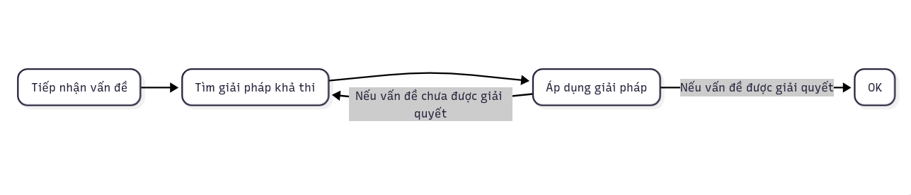

Tự học - Phần 2
Nguồn bài viết: Chuyện tự học: Sandbox – phương pháp giúp bạn tự học bất cứ thứ gì (Bản dịch gốc của tác giả Giao Bui trong group QRVN)
“Biết cách để học một thứ thì tốt hơn là biết về thứ đó” – Dr. Seuss
Suốt chiều dài lịch sử, chưa có lúc nào chúng ta có nhiều thuận lợi cho việc tự giáo dục như ngày nay.
Muốn biết thêm một kỹ năng mới, rất dễ dàng, người ta chỉ cần gõ địa chỉ trang Google, lục lọi và nghiên cứu, thực hành đúng cách và đẩy bản thân vượt lên giới hạn. Nhưng mặc dù có trong tay quyền năng truy cập thông tin đáng kinh ngạc như vậy, rất ít người tận dụng tối đa được nó cho việc tự học.
Chúng ta đã bị gieo vào đầu lối suy nghĩ rằng, ta cần phải có được giáo dục để học điều gì đó, dù trên thực tế chúng ta hoàn toàn có thể tự học. Hiện nay, người ta không cần phải có bằng đại học thì mới đủ điều kiện để làm một số công việc nhất định, và trong khi các công ty lớn và lâu đời vẫn chưa nhận ra điều đó, các startup nhỏ, có tư duy tiến bộ hơn lại mang tư tưởng trái ngược hoàn toàn. Rất nhiều người thành công ở thời hiện đại có được vị trí như ngày hôm nay bằng cách tự dạy mình các kỹ năng, và không có lý gì bạn không thể làm điều tương tự.
Tự học có thể là tấm vé đưa bạn thoát khỏi công việc nào đó mà bạn ghét, hay một chuyên ngành nào đó mà bạn chẳng lấy làm mặn mà, và tự học sẽ là một kỹ năng cốt lõi ở thế kỷ 21. Nó sẽ quyết định khả năng thích ứng với sự thay đổi trong bối cảnh mà danh sách công việc và công nghệ liên tục mở rộng. Câu hỏi là bạn có thể tận dụng tối đa những thông tin có sẵn như thế nào để tự phát triển kỹ năng.
Việc đầu tiên sẽ là thay đổi tư duy về cách chúng ta nên học.
Chúng ta học như thế nào
Ở trung học, đại học và hầu hết các bậc học cao hơn (ít nhất là ở Hoa Kỳ), mô hình đào tạo sẽ định hình cho chúng ta tư duy chờ đợi để được tiếp nhận thông tin và ngừng suy nghĩ để tìm ra cách giải quyết vấn đề.
Bạn “học giỏi như thế nào” sẽ được đánh giá dựa trên điểm số của bạn. Điểm số sẽ được dựa trên điểm kiểm tra, bài thi và đồ án, và những thứ này sẽ phụ thuộc vào việc bạn áp dụng những thông tin được tiếp nhận tốt đến đâu. Trong ít nhất mười hai năm, bạn đã được đào tạo để nhại và dùng lại những thông tin bạn được mớm cho nhưng bạn chưa bao giờ được rèn luyện cách để tự tìm kiếm những thông tin đó.
Sẽ không có vị giáo sư nào bước vào lớp và nói thẳng độp, “hãy tự tìm cách để dựng một trang web, hạn là ngày mai,” và sau đó rời đi. Thực tế có lẽ sẽ giống thế này hơn, thầy cô sẽ dạy học sinh cách để xây dựng một trang web (có thể bằng một số công cụ siêu tệ như Dreamweaver) và sau đó kỳ vọng là các bạn sẽ làm theo đúng các bước như đã được hướng dẫn.
Nhưng ở thế giới thực, việc học không diễn ra như thế. Nếu bạn muốn làm bất cứ điều gì trong bất cứ lĩnh vực gì (kinh doanh, sáng tạo, làm tự do, viết lách, dịch vụ, v.v..) thì bạn phải tìm ra cách để giải quyết vấn đề khi chưa được truyền đạt kiến thức từ trước.
Cách chúng ta được dạy để học:

Cách bạn học trong đời thực:

- Nếu vấn đề được giải quyết > OK
- Nếu vấn đề chưa được giải quyết > lặp lại bước 2 và 3.
Về cơ bản, đây chính là việc “đoán và thử”, và nó là một 'phương pháp để tìm ra giải pháp cho các vấn đề' tốt hơn rất nhiều so với người ta nghĩ.
Khi bạn tự dạy mình một cái gì đó, sẽ chẳng có giáo trình, ghi chép, sách giáo khoa, hay có giáo sư nào hướng dẫn bạn từng bước một. Bạn cứ thế chuyển từ vấn đề trước sang vấn đề sau và dần dần trở nên giỏi hơn trong việc đoán và thử. Bạn không cần sự giáo dục chính quy về một môn học hay chủ đề nào đó, bạn chỉ cần khả năng thử nghiệm, biết tự thúc ép và đáp lại phản hồi.
Nhưng vì đã quen với việc được mớm kiến thức suốt nhiều năm qua, học theo cách thức này có thể khá đáng sợ với bạn. Trước hết bạn sẽ phải rèn luyện (hoặc, rèn lại) khả năng tự học. Và cách dễ nhất để bắt đầu tập thói quen tự học chính là áp dụng một kỹ thuật mà tôi đã phát triển được gọi là “Phương pháp Sandbox (Vùng thử)”
Áp phương pháp Sandbox cho việc tự học
Phương pháp sandbox là một quá trình liên tục để tự giáo dục, dựa trên nghiên cứu khoa học mới nhất về cách chúng ta học và cách chúng ta xử lý thông tin. Theo phương pháp này chúng ta không cần phải ghi nhớ các sự kiện, công thức hoặc các chi tiết vụn vặt khác nữa. Thay vào đó, chúng ta cần phát triển sự hiểu biết trực quan về các kỹ năng mình đang có, tiếp xúc với thật nhiều thông tin về kỹ năng ta muốn học và không ngừng thúc đẩy bản thân tiến bộ.
Ta có thể thực hiện theo phương pháp này một mình hay với người dẫn dắt, ở trường hay ở công ty, vào bất cứ lúc nào. Đó là một quá trình học tập và cải thiện liên tục, được chia thành bốn bước theo chu kỳ.
BƯỚC 1: XÂY DỰNG SANDBOX CHO BẢN THÂN
Trước khi dành thời gian để nghiên cứu cách học hoặc cách để học tốt hơn những gì bạn muốn học, bạn sẽ cần phải tạo một môi trường để thực hành việc học. Theo phương pháp này, bạn sẽ phải dành phần lớn thời gian để thực hành và thử nghiệm chứ không phải học, vì vậy bạn cần một môi trường để có thể dễ dàng rèn luyện kỹ năng và cải biến.
Đó sẽ là “vùng” của bạn, một nơi mà bạn có thể thoải mái vọc vạch đủ thứ liên quan đến kỹ năng mà bạn đang cố gắng học mà không cần phải lo nghĩ nhiều về việc phải ‘làm cho ra làm’. Vùng thử này sẽ cho phép bạn tự do khám phá, thử nghiệm và cả thất bại, mà không gây bất kỳ ảnh hưởng tiêu cực gì đến cuộc sống về lâu về dài, tiền tiết kiệm hoặc danh tiếng của bạn. Nó là một môi trường lý tưởng cho việc học tập bứt tốc.
Tiêu chuẩn của sandbox phải là:
- Chi phí thấp hoặc miễn phí: vì vậy bạn sẽ không trì hoãn việc bắt đầu
- Mang tính sân chơi: vì vậy bạn không sợ thất bại hoặc chia sẻ về việc bạn làm
- Công khai: để bạn sẽ thấy có trách nhiệm phải làm có tâm
Vài ví dụ về vùng thử:
- Lập trình: Tài khoản trên Github, Heroku và StackExchange để bắt đầu dự án nào đó và nhờ trợ giúp.
- Viết: Một blog cá nhân trên WordPress, Medium hoặc SquareSpace.
- Nhiếp ảnh: Máy ảnh và tài khoản Instagram.
- Thiết kế: Phần mềm Sketch, và tài khoản Dribbble để show thành quả.
- Marketing: Một blog hoặc trang thông tin trên WordPress.
Dù bạn muốn học bất cứ điều gì đi nữa, bạn phải có một sandbox sẵn sàng trước khi bắt đầu. Nếu bạn không tìm ra một cách thức dễ dàng nào đó để thực hành điều bạn muốn học và show thành quả cho mọi người, bạn sẽ học chậm hơn rất nhiều và gặp khó khăn hơn trong việc tìm kiếm sự phản hồi.
Việc trưng ra công việc của bạn khi vẫn còn là một tay mơ đúng là đáng sợ, nhưng nó sẽ giúp bạn thoải mái với việc người khác thấy các thành quả sáng tạo của bạn trước khi chúng đạt đến độ hoàn hảo và trước khi bạn thành một chuyên gia. Trường học đã rèn cho học sinh cảm giác sợ bị phán xét thành tích bằng việc mọi thứ đều được đo bằng điểm số, nhưng nếu bạn có thể vượt qua nỗi sợ hãi tiềm ẩn đó và bắt đầu chia sẻ những gì bạn đang làm với những nhóm cộng đồng cùng lĩnh vực, bạn sẽ tiến bộ nhanh hơn nhiều và có thêm các mối quan hệ hữu ích.
Khi vùng thử đã sẵn sàng, giờ bạn có thể bắt đầu nghiên cứu và tìm hiểu thêm về kỹ năng bạn muốn đạt được.
BƯỚC 2: NGHIÊN CỨU
Để tiếp tục mở rộng đường biên của vùng thử, gia tăng mức độ kỹ năng mà bạn có thể thực hành và áp dụng, bạn sẽ cần có sự đầu tư nhất định cho việc nghiên cứu. Các tài nguyên trực tuyến luôn có sẵn để dạy bạn bất cứ điều gì bạn muốn học, vấn đề ở đây là cần tìm ra những gì đáng đọc, đáng xem và/hoặc đáng nghe.
Ban đầu, loại thông tin tốt nhất cần tìm là công thức. Hãy tìm những hướng dẫn ngắn gọn và rõ ràng để sao cho bạn có thể áp dụng ngay lập tức và sử dụng kỹ năng muốn học ở vùng thử. Nếu bạn không thực hành những gì bạn đã đọc (một mình, không chỉ trong giới hạn của nền tảng giáo dục như Codecademy) thì bạn sẽ không bao giờ thực sự học.
Vì vậy, khi bạn muốn luyện tập một kỹ năng, hãy tìm hiểu các tài liệu giúp mở rộng hiểu biết của bạn về nó và cung cấp cho bạn các ‘công thức’ mới để thử nghiệm. Tiêu biểu nhất có thể kể đến là:
Sách
Tôi yêu sách vì chúng là nguồn tài nguyên học tập hữu ích. Tôi đã sử dụng sách để cải thiện kĩ năng chụp ảnh, trở nên tốt hơn ở lĩnh vực marketing, hiểu về cách tâm trí con người hoạt động ra sao, học cách học,và sách là nguồn tư liệu có ý nghĩa rất lớn với những người tự học. Đây là sự lựa chọn tuyệt vời khi bạn muốn mở rộng hiểu biết về chuyên môn và các khuôn mẫu tư duy đối với một số kỹ năng nhất định và sách có thể là những người dẫn đường vô giá chỉ cho bạn thấy những khía cạnh mới của kỹ năng mà bạn có thể chưa từng nghĩ tới.
Bạn cũng có thể sử dụng sách để học các kỹ năng khó hơn như lập trình. Ít nhất thì tôi đã gặp một người đã tự học cách lập trình chủ yếu thông qua sách giáo khoa cho đến khi anh ta biết đủ để tự mình tìm ra vấn đề bằng StackOverflow và trình gỡ lỗi.
Sách cũng có thể cho bạn sự trợ giúp tuyệt vời để cải thiện các kỹ năng ngôn ngữ, bằng cách dạy cho bạn cách trở thành một người học ngôn ngữ tốt hơn và giúp bạn hiểu thêm về sự phức tạp của ngữ pháp một ngôn ngữ nào đó. Đúng là bạn không học được cách phát âm chuẩn, và cũng chẳng thể học nghe từ sách, nhưng chúng vẫn có những lợi điểm không thể chối cãi.
Dù bạn đang cố gắng học bất cứ cái gì đi nữa, sách luôn luôn là một nguồn tài nguyên tuyệt vời để bắt đầu vì chúng thường được hiệu đính và chỉnh sửa nhiều lần hơn những thông tin trực tuyến. Tuy thế, vẫn còn rất nhiều nguồn tài nguyên tuyệt vời mà, đôi khi, chúng tốt hơn khi trên internet.
Blog và tài nguyên trực tuyến
Bên cạnh sách, có rất nhiều nội dung trực tuyến mà bạn có thể sử dụng cho việc tự học. Một số người đã viết hẳn các bài blog về cách tự học marketing, tự học thiết kế, học JavaScript, và nếu bạn chịu khó tìm kiếm, bạn có thể tìm thấy các bài hướng dẫn được viết rất tốt để học về bất cứ điều gì.
Một số nguồn kiến thức sẽ giải thích cụ thể cho bạn biết về một số chủ đề chuyên biệt nào đó, và một số khác, như một số nguồn được liệt kê ở trên, sẽ giúp bạn loại bỏ những thứ khác không cần thiết. Khi bạn đang ngụp lặn trong biển kiến thức phục vụ cho việc tự học trên Internet, thì việc tìm được một bài blog hay nguồn tài nguyên trực tuyến giúp bạn xác định được đâu là kiến thức cần chú trọng sẽ mang đến lợi ích vô cùng lớn.
Cách dễ nhất để tìm những thứ này là chỉ đơn giản là Google “làm thế nào để làm X” hay “cách để tìm hiểu về X” hoặc “đâu là cách để trở nên tốt hơn trong việc X”. Thường bạn sẽ tìm thấy một bài viết hay, một thảo luận trên Reddit hoặc các câu hỏi liên quan trên Quora để bắt đầu quá trình tìm hiểu.
Các khóa học trực tuyến và “MOOCs” (Khóa học trực tuyến đại chúng mở)
Nếu bạn thích xem và nghe hơn đọc, thì các khóa học trực tuyến hoặc “MOOCs” sẽ là một giải pháp hoàn hảo cho việc tự học. Trên Internet có vô vàn các lớp học trực tuyến miễn phí và có phí, có thể dạy cho bạn mọi thứ từ lập trình, marketing, thiết kế, cho đến (giả sử bạn thích) đan rổ.
Một số trường đại học thậm chí chia sẻ miễn phí các bản ghi thu các khóa học. Có thể điểm qua OpenCourseWare của Viện MIT, khóa học mở của Harvard và rất nhiều khóa học miễn phí từ hàng tá trường đại học khác.
Ngoài ra còn có các nền tảng chuyên dụng cực hay để học các khóa học trực tuyến. Cá nhân tôi đã sử dụng SkillShare, Khan Academy, Coursera, Codecademy và Udemy. Ngoài ra còn có rất nhiều giáo viên tuyệt vời trên YouTube (như series của Ruby on Rails), Teachable (như Tiago Forte) và cả những giáo viên tự xây dựng lớp học từ con số không (như Wes Bos).
Một số khóa học trong danh sách kể trên có thể đắt tiền, nhưng cũng có rất nhiều khóa học miễn phí. Và một số khóa miễn phí có khi lại tốt hơn so với loại mất phí. Trong nhiều trường hợp, các khóa học trực tuyến đôi khi lại là nguồn kiến thức tốt nhất bạn có thể kiếm.
Và hãy ghi chú!
Khi bạn học, hãy ghi chú lại mọi thứ để có thể tham khảo lại sau này. Tôi thích sử dụng Evernote và thường ghi chú rất chi tiết, vì nó giúp tôi dễ dàng rà soát lại được những thứ mình đã học được trong quá khứ và nguồn kiến thức. Nó cũng giúp bạn ghi nhớ tất cả mọi thứ, bằng cách xây dựng một “trang wiki cá nhân” trực tuyến – theo lời của Andy Hunt.
Bạn cũng nên xem xét việc chia sẻ công khai những ghi chú của mình trong quá trình học (như với tôi thì là về những cuốn sách tôi đã đọc) vì nó sẽ buộc bạn phải làm rõ thêm sự hiểu biết của mình để diễn đạt nó theo cách mà người khác sẽ hiểu.
BƯỚC 3: ỨNG DỤNG VÀ THỰC HÀNH
Trong khuôn khổ sandbox của mình, cách bạn thực hành thứ bạn học cũng quan trọng như điều bạn chọn thực hành. Thực hành sai phương pháp có thể dẫn đến việc lãng phí hàng giờ, hàng ngày, thậm chí hàng năm trời, nhưng phương pháp thực hành đúng có thể giúp bạn đạt tới mức cạnh tranh được trong vòng vài tháng.
Kiểu thực hành không hiệu quả mà hầu hết mọi người thực hiện gọi là “thực hành ngây thơ”, theo Anders Ericsson viết trong quyển “Peak”. Thực hành ngây thơ là cách mọi người tự lừa phỉnh mình bằng cách nghĩ rằng họ đang thực hành, trong khi thật ra, họ không học được điều gì cả.
Một số ví dụ của thực hành ngây thơ là:
- Chơi một trò chơi mang tính cạnh tranh như Cờ vây một cách thoải mái với một người bạn.
- Chơi những bài hát mà bạn đã biết cách chơi.
- Tìm một công thức, nướng một cái bánh, và sau đó chỉ làm mỗi loại bánh đó.
Vấn đề là trong kiểu “thực hành” này, bạn không thực sự thử thách chính mình. Khi bạn trải qua những hành động thực hành ngây thơ, khả năng cao là bạn sẽ tiến bộ rất ít, hoặc thậm chí là không có tiến bộ, nên bạn cần có thêm những yếu tố chủ động và phải có ý thức cho việc thực hành để đảm bảo rằng bạn thật sự đang học khi áp dụng những điều mình đã học.
Thực hành một cách có nội đích trong vùng thử theo cách đúng đắn tức là bạn phải:
- Thành thật tự đánh giá giới hạn của bản thân để xem bạn cần cải thiện ở điểm nào.
- Đặt ra mục tiêu trên khả năng hiện tại của bạn một chút để tự động viên mình bước ra khỏi vùng an toàn.
- Thực hành với sự tập trung cao.
- Tìm kiếm sự phản hồi, theo bất kỳ cách nào có thể, và tích hợp sự phản hồi đó vào quá trình thực hành.
Tìm kiếm sự phản hồi sẽ là phần cuối cùng của hệ thống tự giáo dục bản thân của chúng ta.
BƯỚC 4: TÌM KIẾM SỰ PHẢN HỒI
Khi bạn đã thực hành một cách có chủ đích trong vùng thử của mình và tiếp tục nghiên cứu để lấp đầy các lỗ hổng kiến thức, mảnh cuối cùng (nhưng rất cần thiết) trong quá trình tự học đó là tìm kiếm sự phản hồi.
Nếu bạn đang muốn cải thiện bản thân trong việc tập tạ, thật khó để biết liệu form người của bạn có tốt hay không khi không có huấn luyện viên kèm cặp để chỉ chỗ sai cho bạn. Khi bạn học một ngôn ngữ mới, khá là khó để biết liệu bạn có đang phát âm đúng hay không khi không có người nhận xét và chỉ lỗi sai của bạn. Bạn có thể học rất nhiều một mình, nhưng không có huấn luyện viên, một người thầy, hoặc công cụ để cho phản hồi và nhận xét, cuối cùng bạn sẽ không thể tiến xa hơn nữa. Hoặc tệ hơn là, bạn tiếp tục thực hiện các kỹ thuật xấu, khiến cho việc bỏ chúng đi khó hơn sau này.
Với một số kỹ năng, bạn có thể tìm kiếm những công cụ trên mạng có chức năng cung cấp nhận xét và đánh giá. Các trang như Codecademy cho bạn biết bạn đã làm sai chỗ nào, và các bài kiểm tra trên các trang thiên về học thuật hơn như Coursera kiểm tra độ hiểu bài của bạn trong quá trình học.
Ngoài ra cũng có các cộng đồng trực tuyến có hệ thống hữu ích trong việc giúp người dùng đưa ra phản hồi cho người khác. Có những hệ thống giúp đỡ, nhận xét lẫn nhau miễn phí như /r/learnprogramming của Reddit thuộc mảng lập trình. Có những trang phản hồi-chia sẻ được giám sát chặt chẽ hơn như Lang-8, nơi bạn phải đưa phản hồi và nhận xét những người đang học ngôn ngữ của bạn, đổi lại bạn sẽ được nhận xét về tiến độ ngôn ngữ bạn đang học từ các thành viên người bản ngữ.
Nhưng hình thức phản hồi tốt nhất vẫn là một người thầy hoặc một huấn luyện viên, người đã hiểu rõ điều bạn đang học. Họ sẽ có thể cung cấp phản hồi chính xác nhất, và nếu họ giỏi, họ sẽ có thể ngăn ngừa được hiện tượng không thể bứt phá lên một mức độ mới sau một thời gian học và giúp đưa ra những gợi ý về cách thiết kế chương trình học để tránh điều đó.
Nếu bạn không có thầy dạy bên cạnh, hãy tìm ai đó trên mạng. Nếu bạn muốn viết văn giỏi hơn, hãy thuê một biên tập viên trên UpWork để đưa ra phản hồi cho bạn. Nếu bạn muốn tập tành cho vóc dáng ngon ra, hãy tìm một dịch vụ trực tuyến tập trung vào việc giúp bạn tăng khả năng nâng tạ. Nếu bạn muốn học một ngôn ngữ mới, hãy tìm ai đó trên iTalki để nói chuyện cùng.
Bạn cũng có thể liên hệ với ai đó bạn thần tượng và hỏi những lời khuyên nho nhỏ bổ ích. Họ sẽ không thể giúp bạn theo kiểu gia sư được, nhưng những lời khuyên đó ít nhiều vẫn hữu dụng.
Một lựa chọn nữa là sử dụng các phương pháp phản hồi ít trực tiếp hơn. Thị trường có thể là một vòng lặp phản hồi tốt, nếu bạn đã và đang thường xuyên xuất bản hội họa, tác phẩm văn chương, hình ảnh nghệ thuật, âm nhạc, bạn có thể cảm nhận được người ta thích gì và không thích gì dựa trên nội dung mà họ phản hồi. Tuy vậy hãy cẩn thận với phương pháp này. Đôi khi bạn sẽ bị kéo theo thị hiếu đám đông thay vì chất lượng tác phẩm. Năm mươi Sắc thái Xám là một trong những quyển sách bán chạy nhất mọi thời đại… nhưng nó không hẳn là một tác phẩm văn chương để bạn noi theo.
Tiếp tục Vòng lặp Tự học
Một khi bạn đã trải qua quá trình thiết kế sandbox cho bản thân, nghiên cứu cách cải thiện kỹ năng, áp dụng kiến thức đó vào việc thực hành có mục đích trong giới hạn của sandbox, và nhận phản hồi về quá trình học tập - bước tiếp theo chỉ đơn giản là lặp lại quá trình đó để cải thiện kỹ năng của bạn.
Khi bạn đã đạt được một mục tiêu học tập, hoặc cảm thấy rằng bạn đã trở nên thoải mái với một khía cạnh nào đó của kỹ năng đó, bạn phải quay lại bước nghiên cứu để đánh giá xem bạn cần học điều gì khác, điều chỉnh sandbox để bạn có thể học kỹ năng đó hiệu quả, rồi thực hành có mục đích và củng cố từ nhận xét để tiếp tục thúc đẩy bản thân ra khỏi vùng an toàn.
Điều này tạo ra vòng lặp tự học. Một vòng tuần hoàn vĩnh cửu của việc học tập và cải thiện bản thân liên tục, nơi bạn không bao giờ phải ngừng cải thiện các kỹ năng của mình hay chạm “trần” trong quá trình học tập

Xử lý phát sinh
Cuối cùng, cũng có khả năng là bạn sẽ kẹt ở đâu đó. Khi điều đó xảy ra, bạn phải đánh giá xem nguyên nhân là gì.
Có phải bạn đã đạt tới ngưỡng “đủ tốt” và chạm “trần”? Vậy thì bạn cần phải học cách bức phá khỏi “trần”.
Có phải bạn đã mất động lực và ngừng thực hành? Vậy bạn phải học cách làm thế nào để xây dựng một cỗ máy tự khích lệ bản thân mãi mãi.
Hay là bạn đang thực hành nghiêm túc, nhưng không tiến bộ? Vậy thì bạn phải tìm hiểu thêm về cách thực hành chủ động và có mục đích.